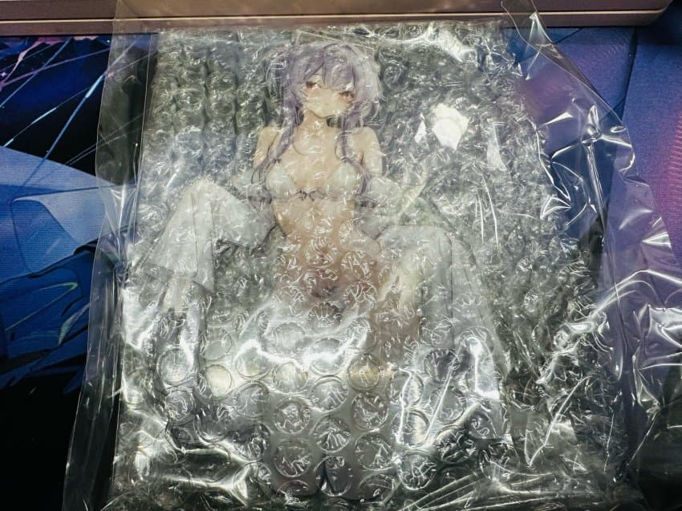
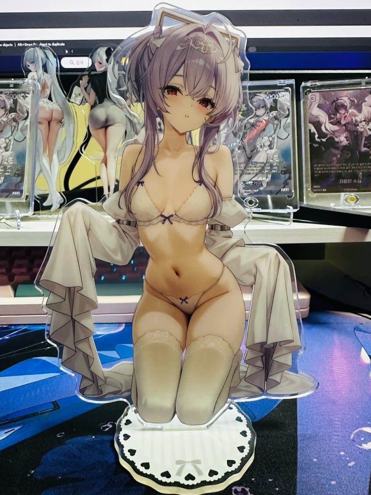
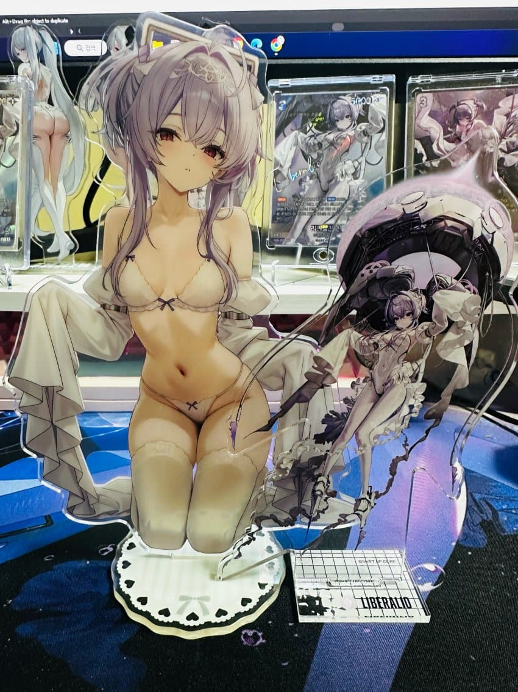
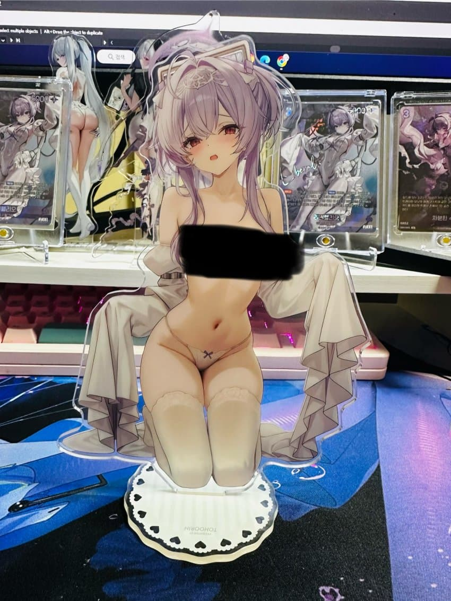

오늘 드디어 메루카리에서 주문한 리버렐리오 아크릴 스탠드가 왔음
해당 아크릴 스탠드는 일본에서 비공식으로 낸건데
꽤 퀄리티가 좋아서 SNS같은데서도 꽤
인기가 많길래 어찌저찌 구매루트같은거 찾아보고해서
외국사이트 메루카리 같은곳에서 팔길래 대행구매업체 이용해서 구매했음...이 과정까지 매우 힘들었음 ㅠㅠ

실제 스탠딩은 이런느낌이고 역시나 퀄리티가 매우 좋았음

크기비교는 공식 리버렐리오 피규어랑 비교했을때
약간 좀 더 큰 정도? 한 18cm?정도 되는거같음

이건뭐냐면...뒤로 돌리면 리버렐리오 ㅉㅉ가 보이게끔 되어있더라고...
솔직히 상품 볼때는 앞면만 보여서 전혀몰랐는데...
역시 이게 비공식 굿즈인가?했음
아무튼 오기까지 한 1-2주 기다린거같은데 만족감은 너무 크고좋다.
비공식 굿즈중에서는 가장 마음에드는듯